Paged Attention from First Principles: A View Inside vLLM
Large language models (LLMs) are trained in highly parallel, compute-bound workloads, but serving them is very different: inference is memory-bound and sequential. Optimising inference is critical because no one will use a chatbot that lags behind typing or a tool that takes minutes to respond. On the business side, squeezing more out of each GPU directly reduces costs and maximises ROI.
A key bottleneck is the key-value (KV) cache, which stores contextual information during decoding. Prior systems wasted 60-80% of this memory due to fragmentation, limiting throughput. PagedAttention, proposed by Kwon et al. in Efficient Memory Management for Large Language Model Serving with PagedAttention, solves this by borrowing the idea of virtual memory from operating systems. The result is near optimal memory usage with under 4% waste and 2-3x higher throughput.
In this post I will build up from first principles, starting with training versus inference workloads, moving to naive KV caching, the OS analogy, and finally how paged KV caching and PagedAttention make LLM serving faster and more efficient. These techniques are already supported in major inference systems such as vLLM, TensorRT LLM, and Hugging Face TGI. In the appendix, I also go through other inference optimisation techniques like continuous batching, speculative decoding, and touch briefly on quantisation.
LLM Training vs Inference
To understand the inference challenges, it helps to contrast how LLMs are used in training versus how they are used in deployment. At a high level, training is when the model learns from data, making predictions by going forward through the network’s layers (the forward pass), comparing those predictions to the known targets, calculating the loss through a loss function (i.e. how far we are from the correct predictions), and then adjusting the weights via backpropagation and some form of gradient descent.
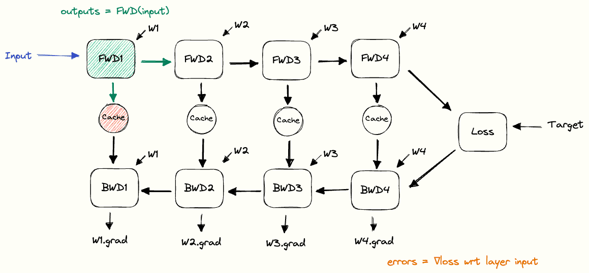 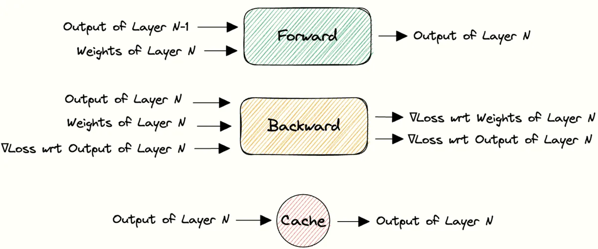 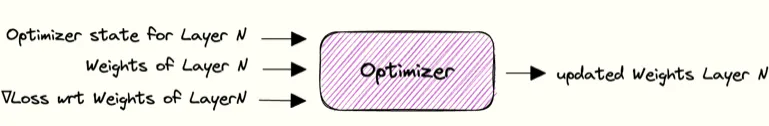
Training especially for large language models is extremely expensive in terms of compute. Models at this scale are trained on massive clusters of GPUs, TPUs, or other specialised accelerators like Cerebras Wafer Scale
On the left is a new AI chip from a startup named Cerebras, the largest in production with 4 trillion transistors and about 900,000 compute cores. In inference, it runs OpenAI’s GPT-OSS 120B at around 2,700 tokens/sec for both single-user and multi-user setups. By comparison, NVIDIA Blackwell DGX B200 reaches about 900 tokens/sec for one user and drops to 580 tokens/sec with ten users. For a breakdown of the hardware differences, see this talk by Jean-Philippe Fricker, the co-founder and chief system architect. You can also try their chat service to get a feel for high-throughput inference in practice. I think it’s a good primer to understand what fast inference really looks like before we dig deep into this blog. Just want to note that I have no affiliation with them. Everything I write here is based on pure interest.
, Graphcore IPUs, or Tenstorrent hardware. Although NVIDIA GPUs remain the most common choice today, training runs are more or less a one-time expense, often costing tens of millions of dollars. Inference, by contrast, is when we fix those learned weights and use the model to generate predictions or responses for new inputs. While this distinction sounds straightforward, the workflows differ significantly in practice, and they require different optimisation strategies.
At the heart of all LLMs is the transformer architecture, introduced in the “Attention Is All You Need” paper. Despite many variations and improvements since, it remains the foundation of state-of-the-art models. On the left below is the original decoder-only transformer, and on the right is the Llama-2 70B architecture, which illustrates some of these later refinements:
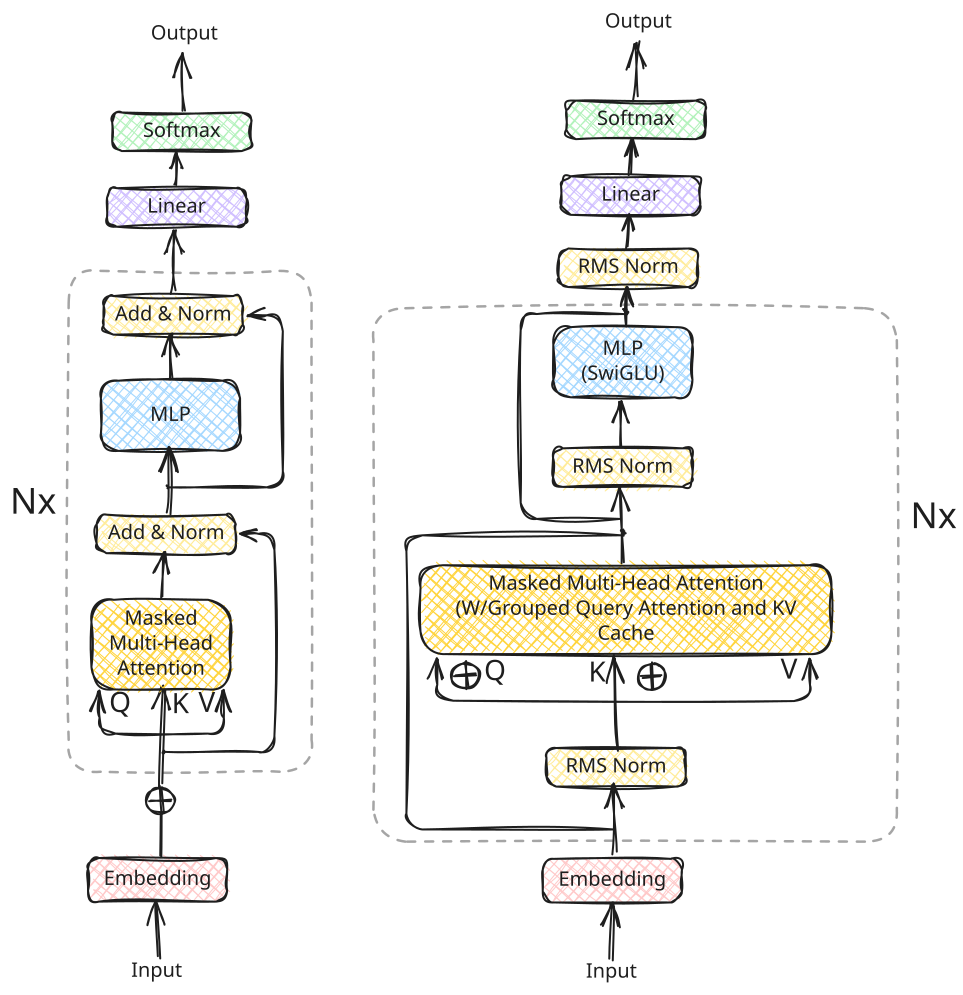
The flow of the network starts from raw text whether that is training data or actual prompts during inference. The model does not understand human characters directly, so the first step is tokenisation. This breaks the text down into a sequence of token ids that the model can process. Each id is then mapped into a dense vector space through embeddings, which gives the model a numerical representation of the input. Positional encodings are added to these vectors as well so that the model can tell where each token sits in the sequence.
From there, the sequence flows through the stack of transformer decoder blocks. Each layer lets tokens interact with one another through multihead-attention with a causal mask to preserve the autoregressive property of language. This builds richer context before passing through feedforward transformations that expand and filter features. Networks also have residual connections, which add the input of a layer back to its output so the signal does not fade, as well as normalisation to stabilise the weights.
There are some architectural differences to note. For example, LLaMA-2 70B uses Grouped Query Attention (GQA), a variant of attention that reduces memory demands. Most modern LLMs also place the normalisation layer before each block rather than after, which is different from the original Transformer. Still, the high-level flow remains the same: tokenised input goes in, contextualised embeddings come out.
At the end of the stack, the model projects everything back onto the vocabulary space, producing a distribution over the next possible tokens. During training, this is compared to the ground truth next tokens for every position in the sequence. This is why LLMs are often described as being trained on next token prediction tasks. There are further stages of training, such as reinforcement learning with human feedback (RLHF), which tune the model to respond in a more human-like way as we experience in modern chat systems.
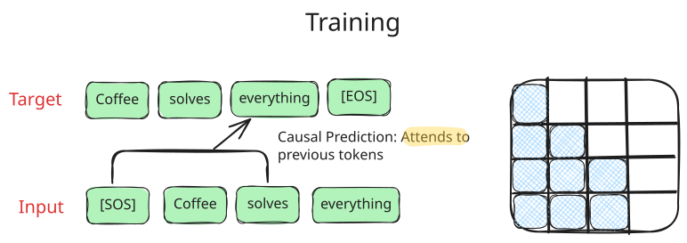
To make this concrete before moving to inference, consider the example sequence Coffee solves everything, with a start-of-sequence token [SOS] at the beginning. We feed in the sequence, tokenised appropriately
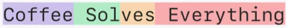
Now here is the crucial point. During training, we already know the full sequence. This allows us to feed the entire sequence through the transformer in a single forward pass. The causal mask ensures that token does not attend to token , so the autoregressive property is respected, but the predictions for all positions are computed in parallel. GPUs excel at this parallelism, so their compute cores are fully saturated with work. In other words, training is compute bound. By compute-bound, we mean that increasing the raw computational power of the hardware directly speeds up training, while memory bandwidth is not the limiting factor
Inference is different in nature. The model does not see the future tokens, so it cannot process the entire sequence in parallel after the prompt. It must step through one token at a time, with each new token appended to the context. That means the GPU is no longer crunching large, dense matrix multiplications that are heavily optimised for AI workloads across many tokens at once. Instead, it is handling small, repeated steps dominated by memory access, loading model weights and cached activations again and again.
This shift in workload is important. When the bottleneck moves from heavy compute to frequent data movement, performance drops. Moving data is always more expensive than doing math on it. This is why inference tends to be memory-bound, while training remains compute-bound.
The Two Phases of Inference
The entire inference process when a user sends a prompt is split into two phases:
- Prefill (prompt phase): The model reads the entire input prompt and prepares to generate the first token.
- Decoding: The iterative loop where tokens are produced one by one sequentially.
These two phases have very different characteristics and bottlenecks.
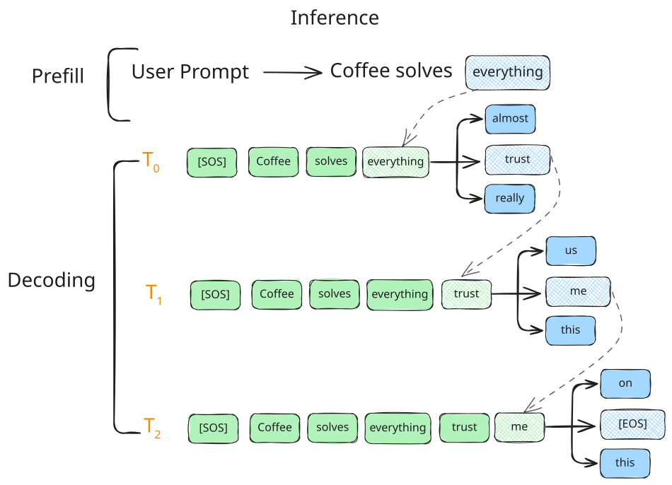
Prefill
During prefill, the model can still leverage its parallelism to process the prompt tokens. All the input tokens (say the prompt is N tokens long) are fed through the transformer network together in one forward pass. This is typically a large matrix multiplication workload which keeps the GPU’s compute units busy. As a result, prefill is usually compute bound. In fact, this process shares more of the characteristics of training, without the backpropagation of course.
The output of this stage is the first predicted token by the model and a set of key/value pair vectors stored for each attention layer of each prompt token, commonly known as the KV cache. We will ignore this for now and return to it later. For now, just assume the end of this process is a new predicted token.
The time until this first token is predicted is an important inference metric called time to first token (TTFT). TTFT grows with prompt length, since a longer prompt means more tokens to process and more attention keys and values to compute before reaching the first prediction. Although this scales with input size, it is generally not the main problem in serving.
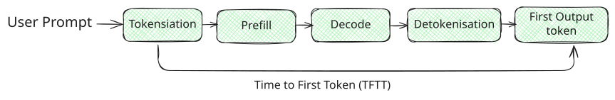
Decoding
After prefill, the LLM enters the decode stage where it generates new tokens sequentially, one at a time. Each iteration of decode takes the current sequence (which keeps growing as new tokens are appended) and performs a forward pass to predict the next token. Unlike the prompt, which is available in full, new tokens arrive strictly one after another. Each decode step is inherently serial, so we cannot compute token t+1 until token t has been generated.
This makes decoding fundamentally different from prefill. It is not compute bound in practice but rather memory-bound, since each new token requires fetching the model weights and reading the stored KV cache from memory. GPUs end up spending more time moving data than performing computation.
Just as TTFT measures prefill, Inter-token Latency (ITL) measures the average time it takes to generate each subsequent token during decoding.
In interactive applications like chatbots, both TTFT and ITL are critical. Users do not want to wait too long before seeing the first response, and they also expect a smooth, reasonably fast stream of tokens thereafter. Other important inference metrics include Total Latency (E2EL) and Token Generation Time. 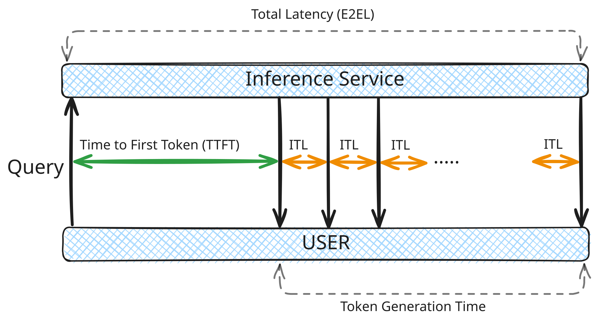
Inference metrics viewed on a token generation process between a user and an inference service.
This two-phase breakdown also explains why serving many requests in parallel is challenging: the prefill stage can be heavy but runs once per request, whereas the decode stage can drag on (possibly hundreds of tokens generated sequentially per request) and tie up resources. Many LLM serving optimisations, such as continuous batching, speculative decoding, and prefill/decode scheduling, aim to keep the GPU busy across these phases without letting one slow request bottleneck others. (I cover batching and speculative decoding in the appendix. Similar to what we will see next with paged KV caching, these techniques are implemented in modern inference systems such as vLLM and TensorRT-LLM.)
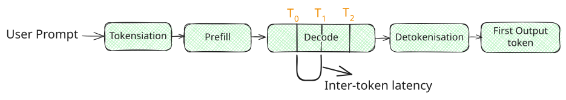
Why Decoding Needs KV Caching
Given the sequential nature of decoding, a naive approach to generate output tokens would be prohibitively slow. If we had to recompute every layer’s activations from scratch for the entire growing sequence at each step, the workload would explode. In practice, we would just be recomputing results that were already calculated earlier. We are already memory-bound, so making things worse is not an option.
To see how wasteful naive decoding would be, consider some numbers. Imagine a prompt of 1000 tokens and we want 100 tokens of output. Without caching, the model would process the full 1000 tokens for the first output, then 1001 for the next, then 1002 for the one after, and so on, adding up to well over 100,000 token computations.
With caching, the model only needs to handle the 1000 prompt tokens once and then compute each of the 100 new tokens on top, for a total of just 1,100 computations, nearly two orders of magnitude less work. The trick is to avoid reprocessing tokens from earlier in the sequence: once the prompt is processed, its intermediate results can be reused for all future decoding steps. In practice, this is done simply by appending to the K and V tensors.
Key-Value (KV) Caching
A core optimisation in the decode phase is KV caching. Each new token depends on the key and value tensors of all previous tokens. These include both the input tokens’ K and V from prefill and any new K and V generated during decoding. To avoid recomputing these tensors at every step, they are cached in GPU memory. With each new token, the model simply appends its fresh K and V to this running cache, and subsequent steps read from it. The inference process would then look like this:
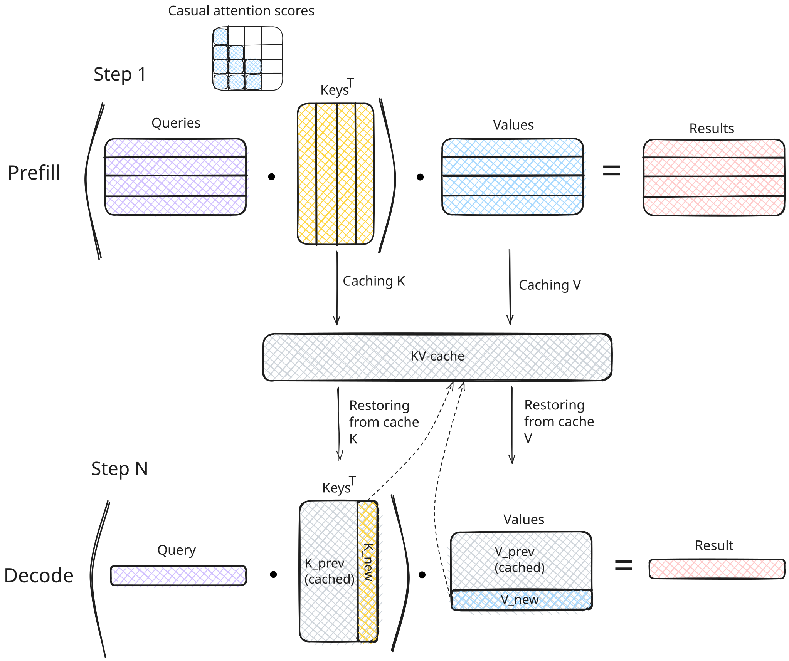
Where the cost comes from is not only the size of the cache but also the memory-bandwidth cost of repeatedly loading and updating the large K and V tensors. With standard multi-head attention, each head maintains its own K and V, so both storage and bandwidth scale directly with the number of heads. For large models, this makes the cache one of the main bottlenecks in inference.
To reduce these costs, a number of attention mechanisms have been proposed. They all aim to shrink the KV footprint or reduce memory transfers, while preserving model quality as much as possible. I won't go into details of each mechanism but here is a brief overview of the most well-known ones:
Multi-Query Attention (MQA): All heads in a layer share a single set of K and V instead of maintaining their own. This significantly reduces both cache size and memory reads during decode, though it usually comes at some cost in model quality.
Grouped Query Attention (GQA): A middle ground between MQA and full multi-head attention. Query heads are split into groups, and each group shares one K and V. This keeps much of the efficiency benefit of MQA while retaining more of the accuracy of multi-head attention. LLaMA 2 is a well-known example that uses GQA.
More recent approaches go further by compressing K and V into latent spaces
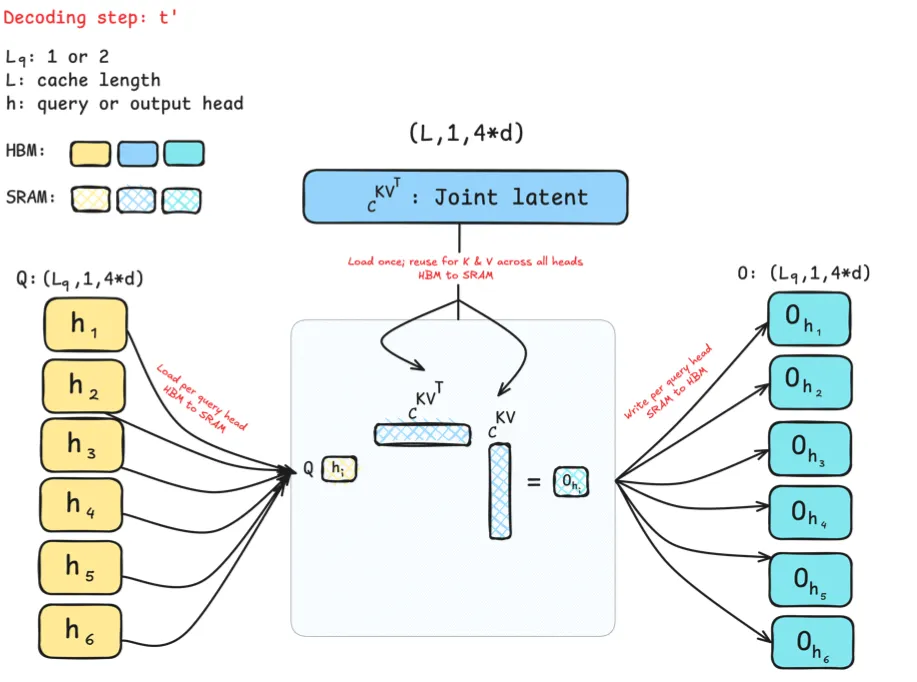 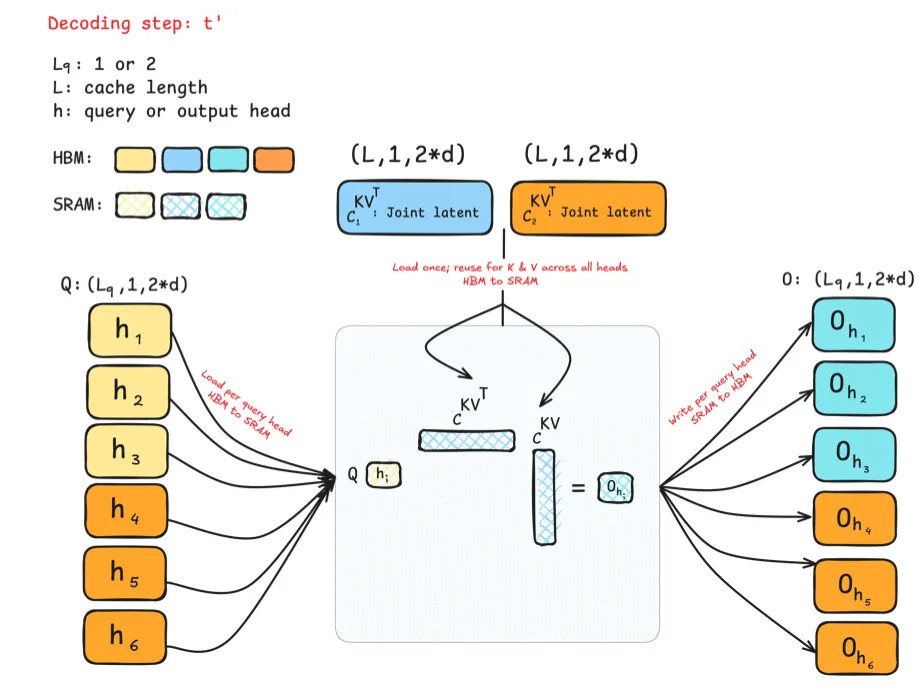
Multi head Latent Attention (MLA): Stores K and V in a learned low-dimensional latent space and projects in and out as needed. This can reduce KV cache size and bandwidth while trading a small amount of extra compute for the projections. This is famously used in DeepSeek V2 and later follow ups.
Grouped Tied Attention (GTA): Ties keys and values within each group, reducing cache size and memory traffic at decode while maintaining GQA-level quality. The tied KV vectors are created using a single projection. The full vector is cached and used as the value (without rotation). For the key, only the first half is taken unrotated, while the second half comes from a separate one-head projection with RoPE, broadcast across groups. This halves the KV cache, cuts memory traffic, and doubles arithmetic intensity compared to GQA.
Grouped Latent Attention (GLA): Stores K and V in a latent representation optimised for efficient parallel sharding. This achieves MLA-like compression while being more hardware-friendly and more suitable for distributed inference.
The Problem with Naive KV Caching
While KV caching solves the redundant recomputing issue, it shifts the bottleneck heavily to memory and introduces significant memory management problems as context lengths grow. Every active request grows a trail of keys and values token by token, and that trail must live on the GPU for fast reads during decode. As soon as we try to serve many requests together using continuous batching for ex., throughput stops being compute bound and becomes memory bound. This is mainly due to two things: first, as the KV cache size grows, we are limited in how many requests we can process together in a batch, which reduces throughput, and second, when memory is not allocated efficiently, naive KV caching leads to severe fragmentation, both internal and external.
Memory scaling
The KV cache’s memory usage scales linearly with sequence length, consuming substantial GPU memory. For each generated token, caches must store a key and value vector per transformer layer and head. Let’s put numbers on this with LLaMA-2–13B. The cache size can be estimated by:
where
= number of transformer layers (blocks)
= batch size
= number of attention headsFor MQA that reduces to just 1 and for GQA that depends on the number of groups.
= per-head dimension
= sequence or context length
2 = two caches per layer for Key and ValueThis is the main component MLA and GLA reduce, making that 1 instead of 2!
Calculating using the formula we just stated, for LLaMA-2-13B in FP16 (2 bytes per element), with standard multi-head attention (40 layers, 40 heads, and equal to 5120/40 = 128 over its default 4096-token context, the per-token KV cache comes to approximately 0.78125 MiB. For the full 4096 token window, the KV cache size is about 3.125 GiB. When we increase batch size, the total memory footprint scales linearly with each additional sequence adding a further ~0.78125 MiB per token.
We now understand that the KV cache prevents us from processing or generating very long sequences (i.e. obstacle long context windows) and from processing large batches and therefore from maximizing our hardware efficiency.
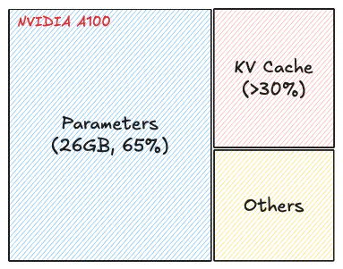
Thats one issue, next we will see the memory fragmentation issue.
| Model | n_layers | n_heads | d_head | d_model |
|---|---|---|---|---|
| Llama-2-7B | 32 | 32 | 128 | 4096 |
| Llama-2-13B | 40 | 40 | 128 | 5120 |
| OPT-7B | 32 | 32 | 128 | 4096 |
| OPT-13B | 40 | 40 | 128 | 5120 |
| OPT-30B | 48 | 56 | 128 | 7168 |
| OPT-66B | 64 | 72 | 128 | 9216 |
| OPT-175B | 96 | 96 | 128 | 12288 |
Fragmentation in continuous batching
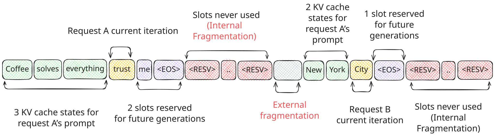
In addition to the huge size of the caches, early LLM serving systems also handled memory allocations inefficiently. This is because during inference, output sequence lengths are unknown in advance. You can imagine this yourself when prompting: some prompts are short, others are long, and each can generate either a long detailed output or a very short one. Now scale this across thousands of users. To deal with this uncertainty, serving platforms used to statically allocate a chunk of memory for each request based on its maximum possible sequence length, regardless of the actual input or the eventual output length. They did this using preallocation schemes that ensured there was enough memory to hold a request’s potential maximum KV cache size, even if that space was never fully used.
The diagram above illustrates how the two types of fragmentation appear. I adapted the figure from the paper but used the same example prompts we have been following in this blog so it feels consistent. Here I call it request A, with a very simple request B alongside it. In practice you can imagine many more requests batched together of course. As you can see, there are two primary sources of memory waste:
- Reserved slots for future tokens: If a generation finishes early and uses fewer tokens than the maximum, the remaining allocated memory stays unused but unavailable for others. This is internal fragmentation.
- External fragmentation from the memory allocator, such as the buddy allocator. This one is a little more subtle, so let us walk through an example.
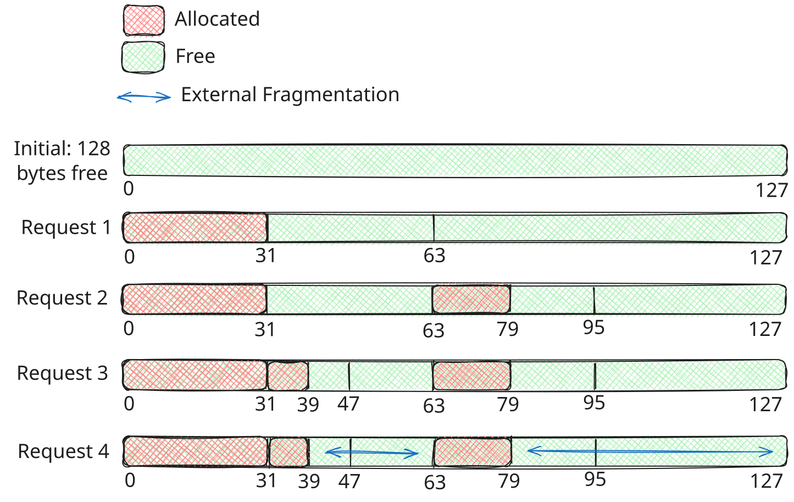
We start with 128 free bytes. Request A arrives needing 32 bytes. The allocator keeps halving the bar until it can hand out 0 to 31, leaving 32 to 63 and 64 to 127 free. Request B needs 16 bytes. We carve it from the right side, split 64 to 127, then 64 to 95, and allocate 64 to 79. Now 80 to 95 and 96 to 127 are free, with the allocated block sitting in between. Request C is tiny, just 7 bytes. The allocator splits 32 to 63 down to an 8 byte piece and allocates 32 to 39, leaving 1 byte inside that piece unused (internal fragmentation). At this point the GPU still has plenty of free memory in total: 40 to 47, 48 to 63, 80 to 95, and 96 to 127, which add up to 72 bytes. But then a new long request arrives that needs 64 bytes in one piece. Even though there is enough free memory overall, there is no single contiguous block of that size, since 64 to 79 is already occupied and the left side has been split into smaller fragments. The allocation fails. This is external fragmentation, and it is exactly the kind of waste that naive per request KV slabs caused, since earlier LLM serving systems stored each request’s KV cache in contiguous memory with preallocated slabs.
Both forms of fragmentation are pure waste. Even though reserved memory is eventually consumed, holding it aside for the entire lifetime of a request especially when the reserved space is large blocks other requests from using it in the meantime.
Paging as the Analogy
Paged Attention borrows directly from virtual memory and paging in operating systems like Unix and Windows. Instead of treating memory as one large block, the OS divides it into page frames and only keeps the active parts in fast memory.
LLM serving faces the same problem with the KV cache. By paging it, we can allocate memory more efficiently, avoid waste, and support much longer contexts. Before getting into paged KV caching and paged attention, I think it helps to quickly revisit this operating systems analogy to later draw the mapping between both concepts.
Operating Systems analogy
Memory pressure has always been a concern in computing. Software generally tends to grow faster than memory, so systems needed a way to run programs that were larger than available memory, and also to run multiple programs at once whose combined size exceeded what could fit. The proposed solution was therefore virtual memory.
The idea is that each program gets its own virtual address space, divided into fixed-sized pages, while physical memory is divided into page frames of the same size. A small mapping structure records which virtual page currently lives in which physical frame, and because of this indirection, a program can behave as if all of its memory were present, while in reality the system only keeps the working set in fast memory.
For example, imagine the instruction MOV REG,1000, where 1000 is some computed virtual address. On a system without virtual memory, that address is sent directly to the memory bus and the word at that position is accessed. With virtual memory, things go first through the memory management unit (MMU), which consults the page table Mathematically speaking, the page table is a function, with the virtual page number as argument and the physical frame number as the output. If the page is present, the access succeeds immediately and is sent to the bus. If it is absent (which is indicated through a hardware present/absent bit), the MMU triggers a page fault, and the operating system fetches the missing page from slower storage, places it into a free frame, updates the mapping, and retries the instruction.
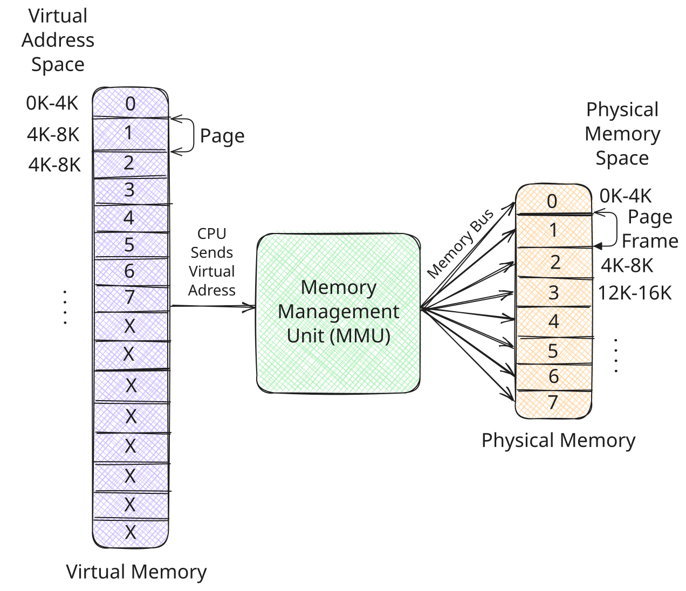
I try to make this structure clear with my drawing, but I guess a simple example on it could make things clearer. Suppose we have this 64 KB virtual address space but only 32 KB of physical memory. The virtual space is divided into 16 pages of 4 KB each, and physical memory into 8 frames of 4 KB. If the table says that virtual page 0 is currently in frame 2, then any access in that page is redirected there. If virtual page 2 is mapped to frame 6, it goes to frame 6. But if virtual page 8 is marked absent, the MMU raises a fault, the OS fetches that page from disk into a frame, updates the mapping, and execution continues. Because translations happen constantly, systems need ways to make them fast. That’s where techniques like translation lookaside buffers (TLBs) and multi-level page tables come in. We won’t go deep into them here, but it’s useful to know they exist.
That’s all we need from the operating systems side. Virtual memory gives the illusion of a large, continuous address space by mapping it onto a smaller pool of fast memory and moving pages in and out as needed. Now lets carry these concepts to paged KV caching and later paged attention.
Paged KV Caching
Paged KV caching applies the same paging idea to the KV cache. Inside vLLM, the KV cache manager is the heart of paged KV caching. Essentially, the KV cache manager owns memory for keys and values and the scheduler decides which requests advance each step. The key difference then is that the cache manager does not hand each request one giant contiguous buffer to store all of its keys and values. Instead, it breaks the cache into fixed size KV blocks measured in tokens per block akin to pages as we saw before, keeps a global free block pool, which you can think of as a doubly linked list, and gives each request a small block table that maps its logical blocks to physical blocks (a.k.a page frames) in GPU memory. When a request grows, new blocks are taken from the pool and appended to its table. When a request finishes, its blocks go back to the pool and can be reused immediately by any other request.
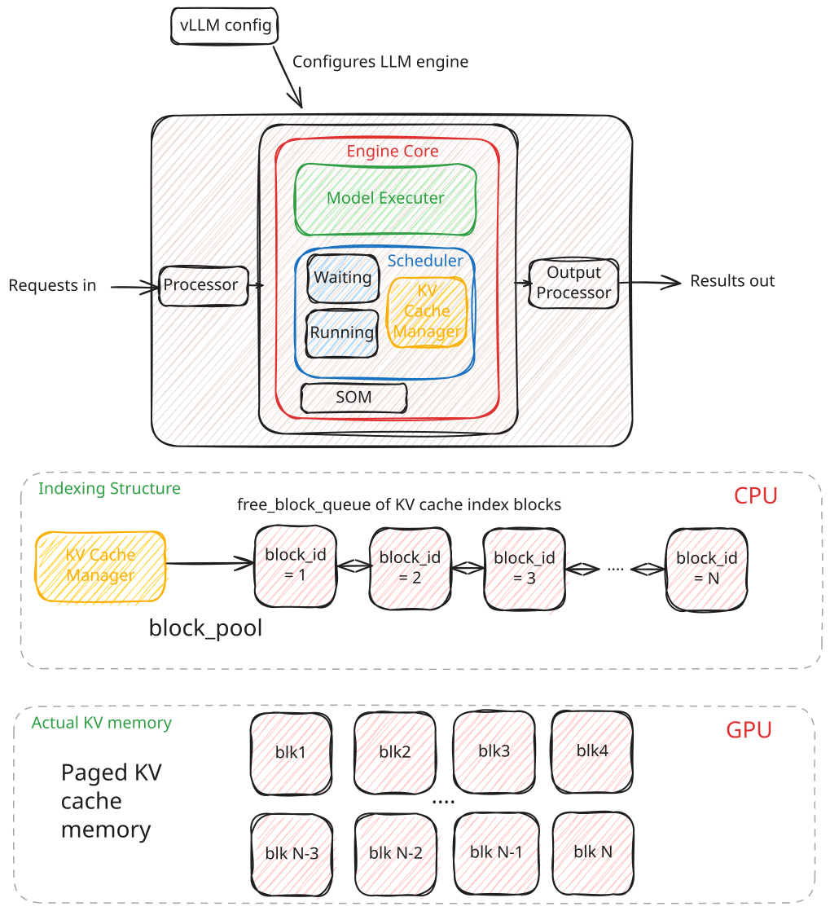
The top part is the engine view which I have adapted from Aleksa's post. Requests come in, the processor prepares them turning raw input into a suitable request format i.e tokenisation, the scheduler picks which ones to run, and the KV cache manager sits in the middle coordinating memory. The middle part is the indexing structure on the CPU side we talked about, which we can think of as a doubly linked list of available block identifiers managed by the cache manager and the bottom view is the real KV data on the GPU, stored as many equal sized blocks. The block table is the bridge which are also maintained by the KV cache manager. Block table is the main table used to map logical KV blocks to their computed KV cache blocks even when the physical blocks are actually scattered.
At initialisation the engine measures how much VRAM is available for cache, chooses a token block size , and computes how many blocks fit. For a standard transformer layer the bytes per block are:
The factor two accounts for keys and values. With GQA or MQA, num_kv_heads becomes smaller, so each block becomes lighter and more blocks fit in the same memory.
During execution vLLM allocates just in time rather than predicting the full future length. In each engine step the scheduler decides which requests advance, then asks the KV cache manager to reserve blocks only for the tokens processed in this step. For prefill the number of new tokens is known upfront, so the manager allocates blocks for a prompt of tokens. For decode the step usually adds a single token
In V1 the engine scheduler can mix both prefill and decoding stages in the same step. In V0, which I am following here for simplification and to keep consistency with Aleksa's work, only one of the two can happen at any time.
. The manager checks the remaining free slots in the last logical block and allocates a new block only when that block would overflow in this step. Similarly, when a request completes, its blocks are returned to the pool. Because every block has the same size, any returned block can satisfy any future block request.
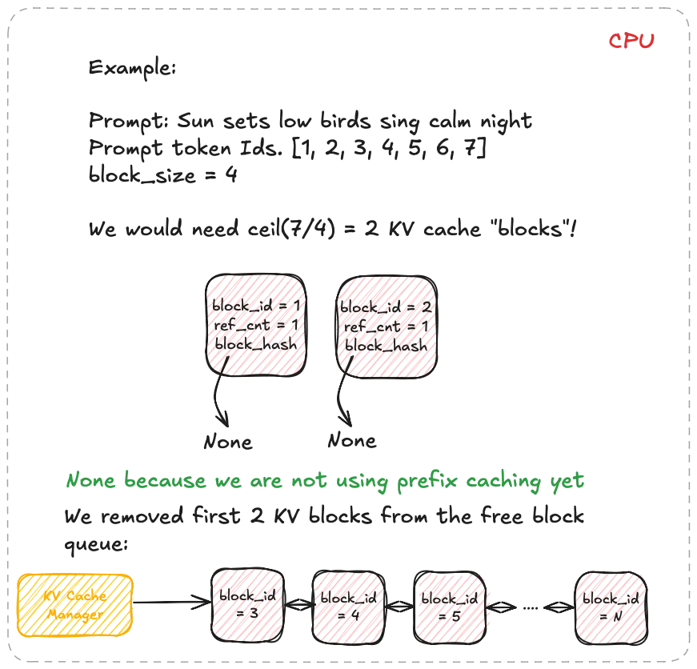
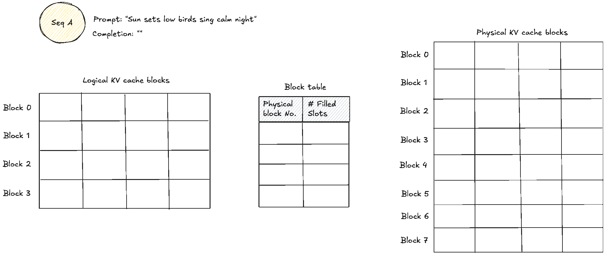
These two diagrams show a simple prompt and how that would look like from the logical and physical memory view and how they are mapped in the block table. Suppose the prompt has 7 tokens and . We need KV blocks. The manager pops two identifiers from the free pool and writes them into the request’s block table. Each entry tracks the physical block id, a small reference count, and often a block hash. The reference count enables memory sharing. When two requests share an identical prefix, they both point to the same physical blocks and the counts increase. No copying is needed, we will see this next. During decode, new tokens are written into the next free slots. When the last block fills, one more block is appended and the table grows by one entry.
A crucial note to make clear: blocks are read shared, write unique. A physical KV block is write owned by a single request. You never let an unrelated request place a token into the spare slot of someone else’s block. If two requests share an identical prefix they can both read the same blocks, and the reference counts increase. The moment one of them needs to append, the cache manager allocates a fresh block for that request, which is effectively copy on write at block granularity. As you realise, that means there can be some small unused tails within the final block of a request, which is internal fragmentation, but that is bounded by at most token slots per request, not the whole context length if you remember from before. The block size trades pointer chasing against packing efficiency. Larger blocks reduce lookups but make reuse coarser. Smaller blocks increase flexibility and reduce unused slots in the last block, at the cost of a few more lookups.
This is an example of how memory sharing would look like with initially two prompts that share the same prefix or prompt. When later they want to produce new tokens the cache manager allocates a fresh block for that request and does a copy on write, copying the same KV caches to another area which then allows each request to have its own "copy" and block which is used to place its new tokens.
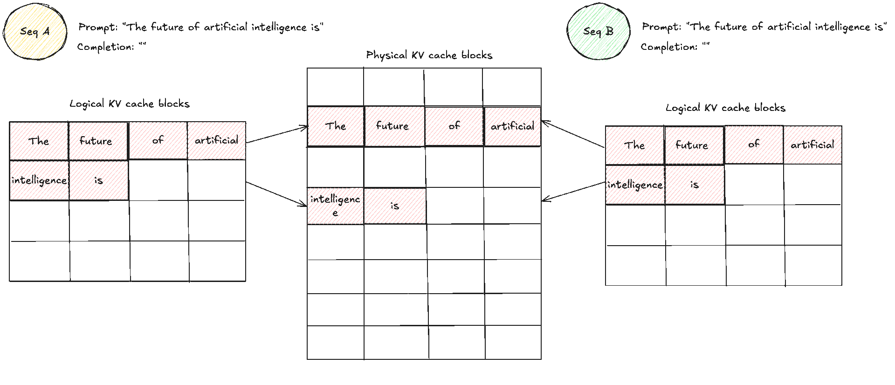
This layout directly fixes what we saw earlier. Internal fragmentation shrinks because the system never reserves worst case slabs. It allocates only the blocks that are actually used, one block at a time as decode progresses. External fragmentation largely disappears because allocation is always in identical blocks, so free space does not turn into unusable holes. Any free block can be assigned to any request, and the block table hides the fact that blocks are scattered.
There are also practical wins for batching and decoding. Continuous batching is smoother because requests of very different lengths can be mixed without wasting memory. Memory sharing avoids duplication and is cheap to represent. If you sample multiple completions from the same prompt or run beams that share an early prefix, all those paths can share the same physical prefix blocks and diverge only when new tokens are produced. The block table simply points more than one request to the same read only blocks, which saves memory without copying. Finally, paging gives a clear behaviour under pressure. If the pool runs out of free blocks when the scheduler wants to advance a batch, the system can pause new prefill work, evict lower priority requests by returning their blocks to the pool, or fall back to recompute strategies where acceptable. All of these choices happen at the level of KV blocks, which keeps the policy simple and predictable.
Paged Attention Mechanism
PagedAttention is the compute side that makes paged KV caching actually work. Classic attention assumes the keys and values for a sequence sit in one contiguous buffer. PagedAttention removes that assumption. It cuts the cache for each request into equal sized KV blocks as we saw previously, then drives attention by following the request’s block table so that blocks can live anywhere in GPU memory while the maths remains identical to standard attention.
Here is a simple example with the query token soon. The past tokens of this sequence are spread across three different KV blocks:
- Block 1 stores sing, calm, night, bring
- Block 3 stores peace, soon
- Block 7 stores Sun, sets, low, bid
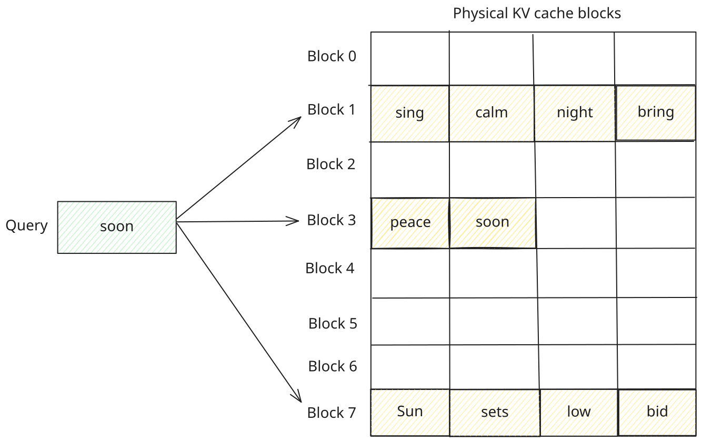
Even though these tokens live in non-contiguous memory, the block table ensures the kernel can still traverse them in the correct logical order and compute attention as if they were all next to each other in a single buffer.
The blocks are numbered . Block simply contains the keys and values for the tokens whose positions fall in that range:
So holds the first keys of the sequence, holds the next , and so on. is the same idea for values.
For the current query token with query vector and head dimension , we can compute attention by visiting these blocks one by one. Written in block form:
Here is the vector of attention weights for the tokens inside block . The vector is the usual attention output for token .
What the kernel does is straightforward. It walks the request’s block table in logical order. For each block it looks up where that block lives in GPU memory, loads the keys , forms the partial scores
updates a running softmax normaliser
I couldn't find more info on whether that is exactly the same as the online softmax used in Flash Attention, but it is likely very similar. that spans all seen blocks, then multiplies the normalised weights with the values and adds the result into . Because the softmax runs across several blocks, the kernel keeps a running maximum and a running sum while it streams. This gives exactly the same numbers you would get if all keys and values sat in one contiguous array.
Now let’s see some numbers to understand what this approach optimised for:
Previous systems wasted 60%–80% of the KV cache memory, whereas vLLM achieves near-optimal memory usage with less than 4% waste. Because of this improved memory efficiency, we can require fewer GPUs to achieve the same output, so throughput is significantly higher than that of other inference engines. This virtual memory-inspired attention design therefore bounds internal fragmentation by the size of the blocks and eliminates external fragmentation. The following plot from the paper shows the different types of memory waste for the same model across three different serving systems compared to vLLM’s paged attention:
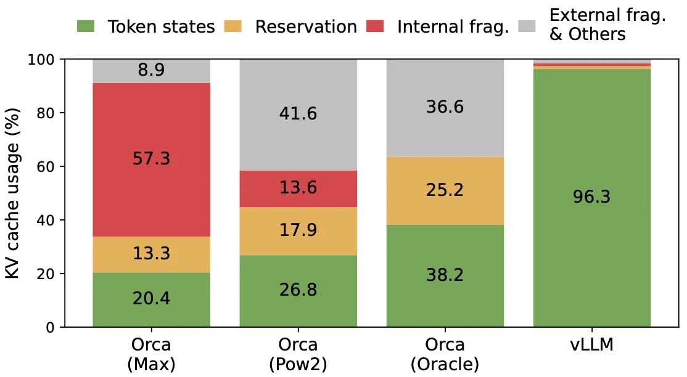
Before concluding, it is important to note a caveat when applying the virtual memory and paging technique to other GPU workloads. The idea of virtual memory and paging is effective for managing the KV cache in LLM serving because the workload requires dynamic memory allocation and performance is bound by GPU memory capacity. However, this does not generally hold for every other AI workload. In DNN training, the tensor shapes are typically static, so memory allocation can be optimised ahead of time. In serving DNNs that are not LLMs, an increase in memory efficiency may not result in performance gains since the workload is primarily compute-bound. In such scenarios, introducing vLLM’s techniques could even degrade performance due to the extra overhead of memory indirection and non-contiguous block access. That said, it would still be exciting to see these techniques applied to other workloads with properties similar to LLM serving.
Appendix: Other Inference Optimisation Techniques
Static vs Continous Batching
Batching helps mitigate the memory bandwidth constraints LLMs face, since they often waste a lot of GPU compute by shuttling data and loading parameters. Instead of loading model parameters for every request, you load them once and use them to process many input sequences or requests. This uses the chip memory bandwidth more efficiently, leading to higher compute utilisation, higher throughput, and cheaper LLM inference.
Static batching is the traditional style, where the server waits until a fixed number of requests arrive and then processes them together as a single batch. It is called static because the batch size stays constant until inference completes.
The first request in a batch is forced to wait for the last one, adding unnecessary delay. Picture a printer that won’t start printing until you’ve queued up a set number of documents, regardless of how long it takes for the last document to arrive.
Not all requests in a batch are created equal. In LLM inference, some requests may generate very short responses, while others could involve lengthy, step-by-step reasoning. Since all requests in the batch must wait until the slowest one finishes, this can lead to wasted compute resources and increased latency.
Without restrictive assumptions on user input and model output lengths, unoptimised production grade LLM systems cannot serve traffic without underutilising GPUs and incurring unnecessary cost. We need to optimise how we serve LLMs for their power to be broadly accessible.
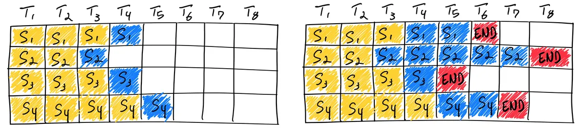
Instead of waiting until every sequence in a batch has finished generation, in the paper Orca: A Distributed Serving System for Transformer Based Generative Models they implement iteration level scheduling where the batch size is chosen per iteration. The result is that once a sequence in a batch has finished generation, a new sequence can be inserted in its place, yielding higher GPU utilisation than static batching. There is sometimes confusion in the literature that calls this dynamic, but continuous fits better, with dynamic reserved for a different strategy.
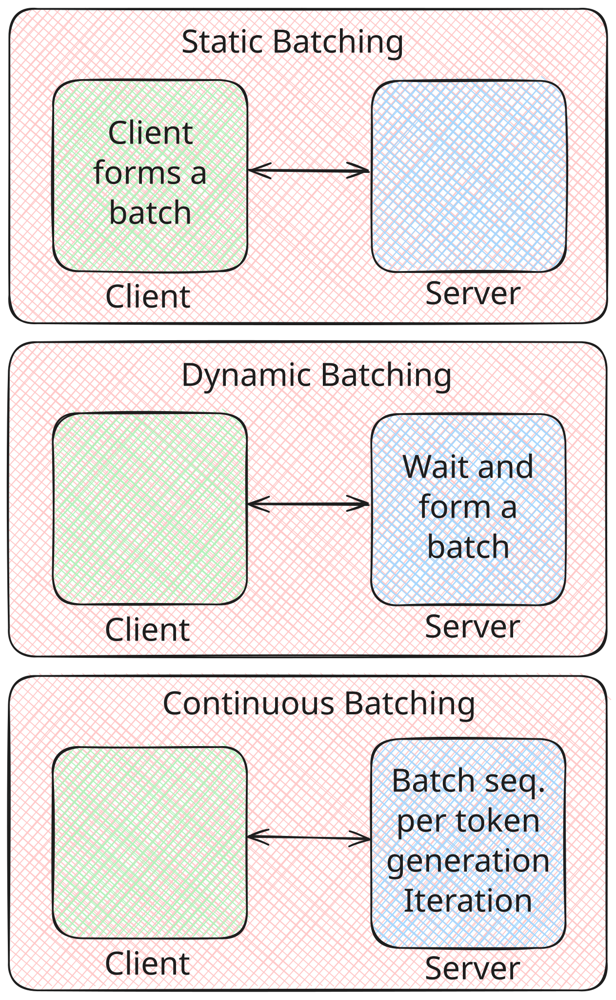
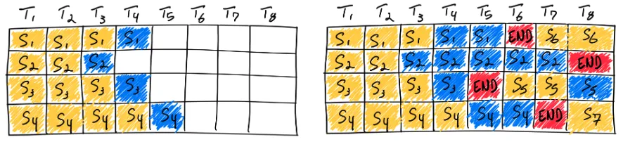
Speculative Decoding
The vanilla generation process outputs only one token at a time at each decoding step. The main point however is that to generate K tokens, you would need to do K forward passes of the model, and as explained in the post this is sequential by nature which doesn’t again utilise compute resources well as step t+1 depends on generations up until step t.
So, token generation time increases linearly. That actually also ties to the different batching strategies explained above, because in the static batching scenarios, throughput is bottlenecked by this linear growth. So more supporting arguments for why continuous batching mitigates this bottleneck.
The larger the LLM, the more competent it can be. However, these larger models are also slower, as each decoding step needs to read the entirety of the model’s weights.
The team from Google Research therefore proposed speculative decoding in Fast Inference from Transformers via Speculative Decoding. The algorithm speeds up generation for autoregressive models by computing several tokens in parallel through a draft "smaller" model which proposes several draft tokens ahead and a larger model which then verifies these proposed tokens in parallel and accepts those that match its own predictions.
This approach was inspired from two key observations:
- Some tokens are easier to generate than others: Many next tokens are obvious from context and can be proposed by a smaller model.
- The bottleneck for inference is usually memory not compute.
Speculative decoding is inspired by an optimisation technique called speculative execution, which was generalised further probabilistically and applied to autoregressive models. Briefly:
Speculative execution: Let’s assume we have two slow steps: first compute , then compute . Normally, we can’t start until we know , forcing strict serial dependence. Speculative execution says “What if I can guess using a cheap approximation , then start in parallel?” Once the original finishes, I check the guess. If it matches, I saved time by parallelising something that was originally serial. If it doesn’t, I discard the speculative work and fall back to the original. Either way, correctness is guaranteed, but when the guesser is good, we gain significant speedup.
Speculative sampling: LLMs don’t produce a single next token, but rather a probability distribution from which we sample the next token (side note: think softmax over the vocabulary). This makes the output stochastic, not deterministic. So this new method extends the above by introducing a probabilistic acceptance rule. At each step we have , the true distribution from the large model, and , an approximate distribution from a smaller model. We let the draft sample a token and immediately start downstream computation with it. There’s a caveat, though: because the output is stochastic, we can’t just accept if the draft and target happen to pick the same token. With vocabularies in the tens of thousands, that would almost always fail, wasting work.
Speculative decoding: Speculative sampling fixes this by introducing a probabilistic filter. When the draft model samples a token, we check how much probability the large model assigns to that token. If the large model also thinks it’s likely, we accept the draft’s choice with high probability. If the large model thinks it’s less likely, we reject more often and fall back to resampling directly from the large model
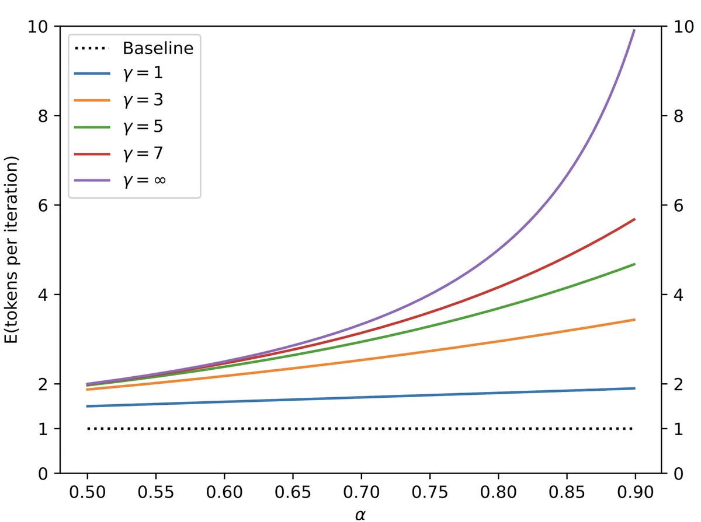
The baseline (dotted line) corresponds to naïve decoding: always one token per step. With speculative decoding, as α increases (draft guesses are more often correct) and as γ grows, the effective tokens per iteration rises significantly. For example, with γ = ∞ and α close to 0.9, the system can generate nearly 10 tokens per iteration, compared to just 1 in the baseline. We just gained free parallelism! Better draft models and larger lookaheads directly translate into higher speedups. . With this approach, we are guaranteed that despite the lower cost, the generated samples come from exactly the same probability distribution as those produced by naïve decoding.
For more details and examples, Google Research also put out this blog post to explain the concept in more detail.
In the original paper, speculative decoding demonstrated a 2×–3× wall-time speedup on models like T5-XXL, while maintaining identical output distributions.

Quantisation
Another very important and heavily researched optimisation direction is also quantisation. State-of-the-art models nowadays are casually in the order of billions of parameters. To put this into perspective, Hunyuan-Large, an open-source Mixture-of-Experts model, has 389 billion total parameters with only 52 billion active per inference step—“only,” I say sarcastically—that is still massive. DeepSeek-V3 has 671 billion total parameters, with about 37 billion active during token generation. You get the point.
Even though active parameters are much smaller than the total weights, inference still requires all parameters in memory (for example, GPU VRAM) since different experts are chosen for every layer and every token. This means the total model size sets the minimum memory requirement. A natural direction, then, is to make models smaller so they require less memory. But what does “smaller” mean?
Parameters are usually stored as floating-point numbers, and inference involves huge amounts of floating-point operations (FLOPs). There are different floating-point precisions. Intuitively, by lowering the precision we massively reduce memory usage, albeit at the potential cost of accuracy. Finding that balance is a major research focus. Before continuing, it makes sense to point out the main floating-point precisions:
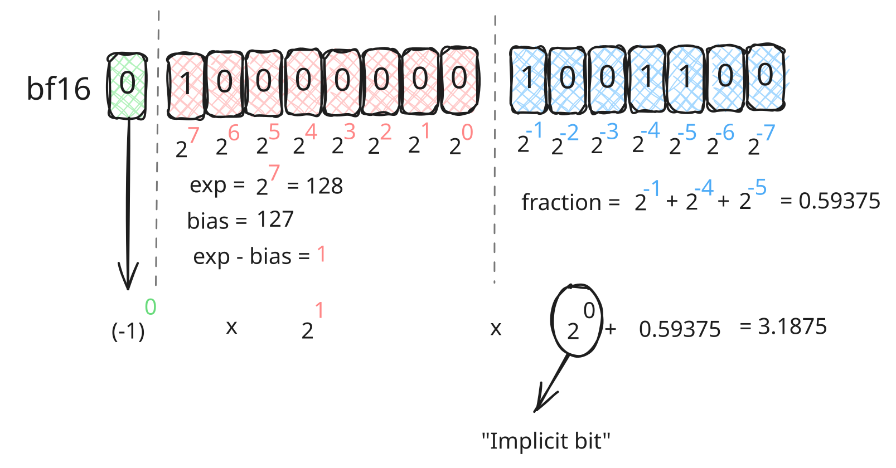
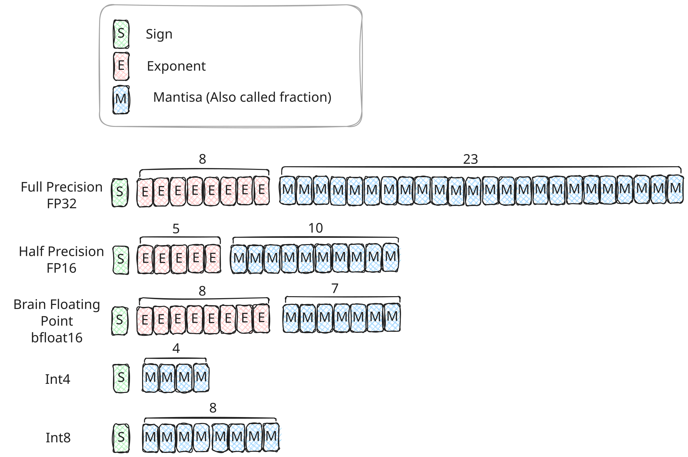
There are others too, but these are the main ones. In practice, quantisation today often uses integer-based formats
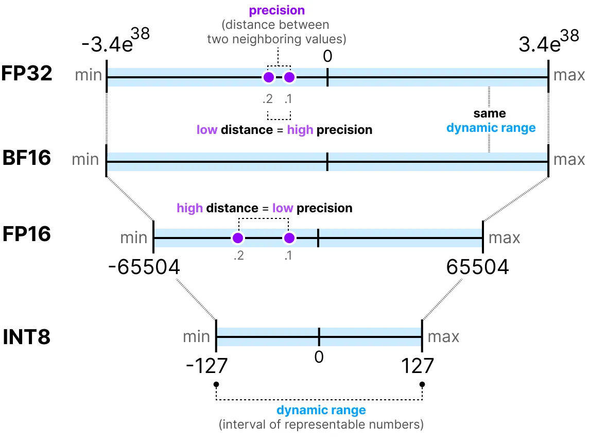
Inference also needs memory beyond just weights (e.g. the KV we have been talking about until now), but let’s see how much memory DeepSeek-V3 would need solely to load the full weights ignoring the cache for now:
Clearly, no GPU can hold 1,342 GB. In practice, inference is distributed across thousands of GPUs using methods like tensor parallelism and pipeline parallelism. I won’t dive into those here, but they’re worthwhile topics. What you can clearly see here however, is that just by reducing precision, memory needs shrink drastically. Beyond memory savings, integer formats like int8 or int4 may even be faster than floating-point on some hardware On NVIDIA H100 Tensor Cores, peak INT8 throughput reaches ~2000 TOPS compared to ~1000 TFLOPS for FP16/BF16. .
Quantisation mapping
The main idea is that we want to take floats in some big range and squash them into integers in a smaller range . For signed INT8, for example, that range is . To make this work, we assume a straight-line relationship between the float and its quantised integer . For more detail checkout Lei Mao’s blog post where he goes in depth into this. It helped me understand this more clearly:
Here is the scale, i.e how many float units each integer step covers, and is just an offset. If we want to go the other way (float to integer), we flip the line and round:
The line has to hit the ends of both ranges, so we require:
Subtracting these two equations gives:
Using distributive law:
which means:
Once we know , we can plug it back into to get :
and replacing gives:
That’s the general form tho. In practice libraries usually call the scale and the zero point, and the final formulas you actually use look like this:
with
Let's run this through an example visually to map the concepts better assuming we having a vector of 5 weights that are represented in FP32 and we would want to quantise to int8. In practice we do not map the entire precision range in FP32 for thats [-3.4e38, 3.4e38] into INT8. Instead, we take the actual data we want to store, find its minimum and maximum, and fit that interval into the INT8 code range.
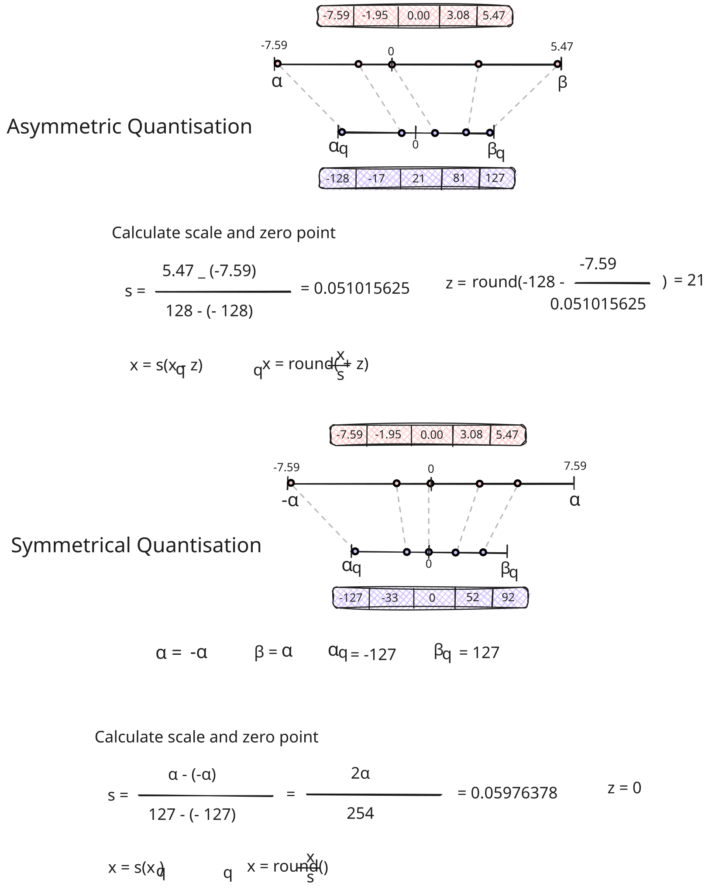
Symmetric vs Asymmetric Quantisation
Notice the difference. In asymmetric quantisation we use the true data range, so is the minimum of the tensor and is the maximum. That choice gives a non-zero 0 point in code space, which is why in the first example 0 in float was stored as the code . We also use the full set of INT8 codes end to end. In symmetric quantisation we centre the float range around 0 by taking to be the larger of the absolute min and max, then map the interval from to onto a perfectly centred code range with zero point .
Comparing the two modes:
With asymmetric quantisation we pin the real minimum to the smallest code and the real maximum to the largest code, so the data is spread across all buckets. Nothing is wasted. With symmetric quantisation we force the float interval to sit around zero. If the tensor is mostly on one side, many buckets represent values you will never see. The extreme case is after ReLU where everything is non negative. Asymmetric uses all 256 codes across the useful region. Symmetric keeps 128 codes for negatives that never appear.
In asymmetric mode however, the zero points require additional logic in hardware. That extra handling can add a little latency and complexity, depending on the implementation.